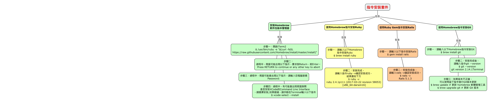

WARNING:
JavaScript is turned OFF. None of the links on this concept map will
work until it is reactivated.
If you need help turning JavaScript On, click here.
此概念图以 IHMC CmapTools 创建, 内含信息有关于: 指令安裝套件, 指令安裝套件 包含 安裝Homebrew 軟件包版本管理器, 安裝Homebrew 軟件包版本管理器 包含 步驟三：過程中，視窗可能會出現以下指示，請輸入您電腦密碼 Password:, 安裝Homebrew 軟件包版本管理器 包含 步驟二： 過程中，視窗可能出現以下指示，要求按Return，就Enter。 Press RETURN to continue or any other key to abort, 安裝Homebrew 軟件包版本管理器 包含 步驟四：過程中，有可能會出現視窗詢問 是否安裝XCode的Command Line Interface ，請選擇安裝;如果錯過，請手動在Terminal輸入以下指令 $ xcode-select --install, 使用Homebrew指令安裝Ruby 包含 步驟一：請輸入以下Homebrew 指令安裝Ruby $ brew install ruby, 使用Ruby Gem指令安裝Rails 包含 步驟二：安裝完成後， 請輸入rails -v確認安裝成功。 $ rails -v Rails 5.1.3, 指令安裝套件 包含 使用Homebrew指令安裝Git, 使用Ruby Gem指令安裝Rails 包含 步驟一：請輸入以下指令安裝Rails $ gem install rails, 使用Homebrew指令安裝Git 包含 步驟三：如果版本不正確， 可以使用益下指令進行Git版本更新 $ brew update # 更新 homebrew 軟體管理工具 $ brew upgrade git # 更新 Git 版本, 指令安裝套件 包含 使用Homebrew指令安裝Ruby, 使用Homebrew指令安裝Git 包含 步驟二：安裝完成後， 請輸入指令git --version $ git --version git version 2.14.1Terminal, 指令安裝套件 包含 使用Ruby Gem指令安裝Rails, 使用Homebrew指令安裝Git 包含 步驟一：請輸入以下Homebrew指令安裝Git $ brew install git, 使用Homebrew指令安裝Ruby 包含 步驟二：安裝完成， 請輸入指令ruby -v確認安裝成功， 結果應如下方 $ ruby -v ruby 2.4.1p111 (2017-03-22 revision 58053) [x86_64-darwin16], 安裝Homebrew 軟件包版本管理器 包含 步驟一：開啟iTerm2 $ /usr/bin/ruby -e "$(curl -fsSL https://raw.githubusercontent.com/Homebrew/install/master/install)"
